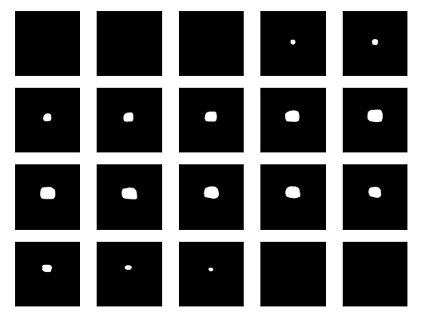
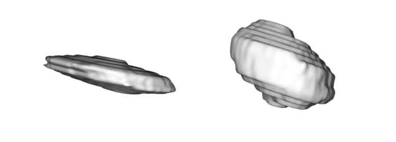

一、问题描述
最近在开发过程中遇到了这样的问题：
在医学图像开发过程中，我们将医学图像通过深度学习算法进行分割，现在想要通过这一套二维图像进行三维重构。
以下是分割结果：

以下是读取的遮罩mask：

如何将这些二维图像进行三维重建，是个棘手问题，笔者通过vtk进行建模操作。
二、解决方案
0. 写在前面
医学图像的三维重建本身就是热点技术，这项技术也并非新鲜技术，笔者调研多份前者的博客与其余资料，整理出了自己的解决方案，旨在与大家共同交流，如果您有更好的建模方案，欢迎随时与我交流！
1. 准备工作
进行医学图像的三维重建，首先需要提供清晰可见的轮廓与遮罩。（如图二所示）
所用到的库：
- vtk，您可以通过
pip install vtk直接安装
2. 文件结构
- mask文件夹 （用于存放分割结果遮罩，图片名为
mask_0.png,mask_1.png,mask_2.png等20张图片） - vtk_gaussian.py （python脚本，用于执行并进行三维重建）
如图所示：

3. 代码讲解
3.0 完整代码
我知道有的朋友比较急，这里先给出完整代码：
1 | import vtk |
3.1 定义渲染窗口、交互模式
1 | import vtk |
本人的所有三维重建脚本中几乎都包含这一块内容，同时这也是进行vtk交互窗口初始化的部分，更多信息您可以查阅vtk官方文档或者其他技术博客。
3.2 读取二维图像序列 - 定义读取接口
要将mask_0.png到mask_19.png的图像全部读取，需要先定义个图片读取接口 (vtk.vtkXxxReader)。
笔者的图像为.png格式，因此使用vtk.vtkPNGReader() 进行图像读取。
1 | PNG_Reader = vtk.vtkPNGReader() |
在这里，可以根据不同的图片格式选取不同的vtkReader，如果是 .jpg 格式的图像，可以有如下更改：
1 | JPG_Reader = vtk.vtkJPEGReader() |
3.3 读取二维图像序列 - 前置设置 & 图像读取
1 | # 定义图像大小，本人表示图像大小为（256*256） |
这段代码是进行图像读取的一些前置设置。SetDataExtent()函数的参数设置会对后续图像的处理会有一定影响，请正确填写您所使用的图片的大小和数目！
SetFilePrefix() 函数会根据传入的字符串进行锁定。在这里一定要特别注意：
- 本人的图像存放在
mask文件夹下，每张图片的名字为：mask_0.png,mask_1.png等 - 在这里设置Prefix时，就要输入
mask/mask_ - 后面的
SetFilePattern()函数会自动读取数字，因为前缀已经设置好，不需要再在此处进行一些正则运算符操作
3.4 图像数据量少，三维建模的结果很扁平
解决方案：您可以增大图像之间的间距来解决这个问题，紧接着上面的代码：
1 | PNG_Reader.SetDataByteOrderToLittleEndian() |
在读取好图片之后，可以设置图像之间的 spacing 这个列表，分别代表x, y, z 三个维度的间距，其中我将z维度的间距增大为2.5， 这样的操作在后面的建模中有显著效果。具体内容如下：

为了使建模结果更接近与器官的形状，我建议设置好二维图像之间的间距。
3.5 三维重建结果的平滑—高斯平滑
原本建模的结果“层次分明”，并不是特别美观。笔者采用高斯平滑的方案对图像进行平滑。
如果您有更好的平滑方案，欢迎您与我交流！
1 | # 高斯平滑 |

3.6 计算轮廓与边缘提取
在进行高斯平滑之后，进行边缘提取。
1 | # 计算轮廓的方法 |
3.7 管道操作与可视化展示
后面这段代码是vtk的显示部分，笔者一般不去动它，也是每一份脚本中的固有内容，如果您对该部分感兴趣，您应该查阅vtk官方文档。
1 | mapper = vtk.vtkPolyDataMapper() |
三、一些vtk库的使用经验分享
1. python vtk
个人感觉python vtk的开发并没有pythonic风格，开发者有一些将cpp的开发思路带入python库/接口的设计，让我写起来味如嚼蜡，从上面的代码亦可以看出，具有浓厚的cpp风格。
不过代码能跑就行，不得不说vtk仍然是很强大的三维重建工具！
2. 数据传入的两种方式
2.1 .GetOutputPort() 和 .SetInputConnection()
您会看见诸如 contour.SetInputConnection(gauss.GetOutputPort()) 的句子。
这两个函数一般是成对出现，上下传递的。
2.1 .GetOutput() 和 .SetInputData()
笔者在参阅其他博主的博客时，同样看见这样的写法，例如:
contour.SetInputData(gauss.GetOutput())
这两个函数一般是成对出现的，进行上下传递处理结果。
3. vtkImageData 和 vtkPolyData
在开发过程中，您可能会遇到不少报错，其中肯定会有vtk数据类型报错的问题。我整理了一份表格：
| Name | Input Type | Return Type | Variable |
|---|---|---|---|
| vtk.vtkPNGReader() | ? | vtkImageData | PNG_Reader |
| vtk.vtkImageGaussianSmooth() | vtkImageData | vtkImageData | gauss |
| vtk.vtkMarchingCubes() | vtkImageData | vtkPolyData | contour |
| vtk.vtkPolyDataNormals() | vtkImageData | vtkPolyData | normfilter |
希望能够帮助您解决开发过程中的一些疑惑。
后记
医学图像的三维重建工作部分博客较少，笔者希望提供一些星星之火，大家共同进步！
笔者采用的重建代码已经打包至百度云盘，您可以通过下面的链接下载：
提取码：jpt3
如果您喜欢此博客或发现它对您有用，则欢迎对此发表评论。 也欢迎您共享此博客，以便更多人可以参与。 如果博客中使用的图像侵犯了您的版权，请与作者联系以将其删除。 谢谢 ！